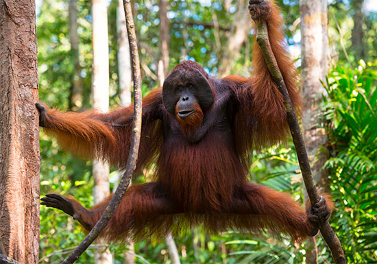

Orang Utan merupakan salah satu mamalia langka yang hidup di Pulau Sumatera dan Kalimantan, Indonesia. Bentuknya menyerupai kera besar dengan lengan panjang dan bulu yang lebat berwarna kemerahan, serta tidak memiliki ekor. Primata langka asal Indonesia ini biasa tinggal di pepohonan di hutan hujan tropis, dan membuat sarang mereka menggunakan dedaunan. Orang hutan memang termasuk hewan omnivora (pemakan segala). Namun makanan orang utan yang paling umum adalah tumbuh-tumbuhan, dan buah-buahan. Orang utan juga memakan kulit pohon, bunga, madu, jamur dan serangga. Orang utan adalah binatang pemalu. Hewan ini jarang sekali menunjukkan dirinya dihadapan manusia. Namun tetap saja ancaman terbesar mereka adalah manusia. Orang utan termasuk jenis hewan semi-soliter yang tidak hidup dalam sebuah kawanan seperti bangsa kera yang lainnya. Beberapa fakta menarik tentang orang utan antara lain : mereka memiliki DNA yang 96,4% mirip manusia. Orang utan juga disebut-sebut sebagai salah satu hewan yang bisa menggunakan alat bantu, misalnya tongkat untuk mengambil makanan, atau daun pisang untuk berteduh. Orang utan jantan dapat membuat panggilan yang dapat didengar hingga radius 1 km. Namun sayangnya populasi orang utan saat ini semakin menurun. Diperkirakan saat ini hanya ada sekitar 200 ekor di Pulau Sumatera, dan sekitar 55.000 ekor di Pulau Kalimantan Hal ini diakibatkan oleh kerakusan manusia dalam membuka lahan baru. Tentu masih jelas diingatan kita saat beberapa ekor orang utan diburu dan dibantai hanya karena dianggap sebagai hama pada perkebunan sawit.